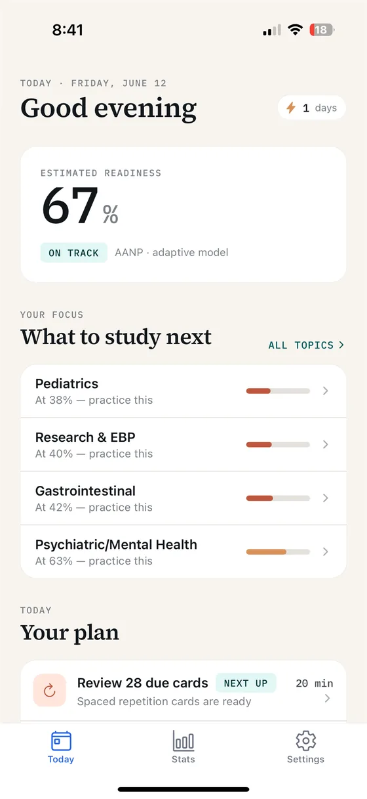
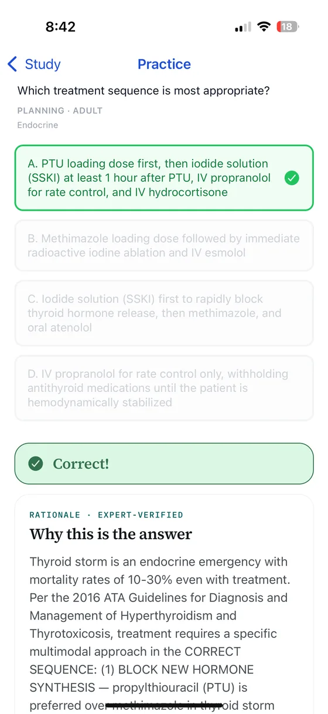
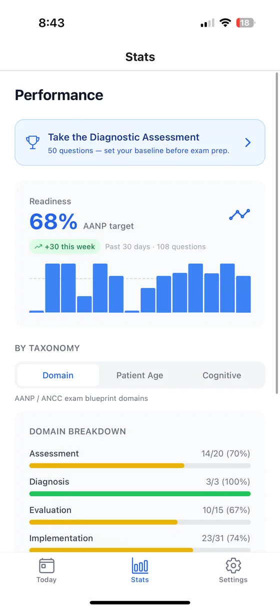

BoardBound
A nurse practitioner board prep app that pairs an adaptive question bank with a conversational tutor you can argue with. Live on the App Store as BoardBound Prep.
The problem
Board prep question banks tell you an answer was wrong. They rarely tell you why your reasoning was wrong, and the reasoning is the part that decides the next question you miss.
What I built
An adaptive question bank with a tutor that explains the reasoning behind each answer. The app tracks which topics you keep missing, schedules them back on a spaced-repetition interval, and estimates pass probability from your own performance rather than a generic curve.
Screens



App Store screenshots.
How it works
React Native on Expo with Supabase behind it, and a large language model driving the tutor. The adaptive engine weights re-drills toward repeated misses, which is the study method I use myself: master the questions, then teach them back.
Where it stands
Live on the App Store as BoardBound Prep since June 2026; the current version is 1.0.4.